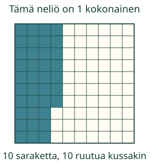
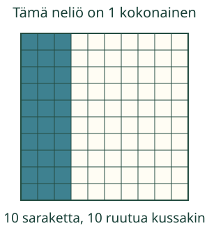

Aavan lappu on 1 kokonainen: 100 yhtä suurta ruutua.
Katso: 0,3 ja 0,30 ovat sama alue
Ennakoi: kasvaako väritetty alue, kun sama lappu jaetaan pienempiin osiin?
Miksi sadasosa?
Kymmenesosasta kymmeneen sadasosaan
Aavan lappu on yksi kokonainen. Siinä on 100 yhtä suurta ruutua. Voit jatkaa oman ruudukon värittämistä ja kirjoittaa sen määrän tässä. Aiemmat valintasi ja vastauksesi säilyvät.
Yksi kokonainen on jaettu kymmeneen yhtä suureen sarakkeeseen. Sarake on 1/10 = 0,1. Kun jokainen sarake jaetaan kymmeneen yhtä suureen ruutuun, ruutu on 1/100 = 0,01. Kymmenen sadasosaa on yksi kymmenesosa.
Jatka ruutujen värittämistä tässä
Malli on ilman JavaScriptiä alkuperäisessä kohdassaan: avaa mallin kohta.
Esimerkki: 37 sadasosaa

Sama määrä kahdella merkinnällä

Älä sekoita 0,07 ja 0,7
0,07 on 7 ruutua. 0,7 on 70 ruutua, eli 7 täyttä saraketta. Ne eivät ole samat määrät. Nolla kymmenesosien paikalla kertoo, ettei kokonaista saraketta täyty.
Uusi tilanne: eurot
Eurossa on 100 senttiä. 5 senttiä on 0,05 euroa. 2 euroa ja 5 senttiä = 2,05 euroa, ei 2,5 euroa. Hinnan kokonaiset eurot ovat annettuja; kokeilun ruudukko näyttää vain senttiosan suhteessa yhteen euroon.
Lisätutkimus ja paperilappu
Väritä sama määrä kahteen yhtä suureen ruudukkoon eri järjestyksessä. Sama ruutujen määrä edustaa samaa osaa, vaikka kuvio muuttuu. Kun kaikki 100 ruutua väritetään, saadaan 1 kokonainen. Tyhjän lapun väritetty määrä on 0.
Lopuksi: Montako sadasosaa on yhdessä kymmenesosassa? Miksi 0,40 ja 0,4 ovat samat?
Opettajalle: yksikkö ja rajat
Luokat 3–6. Pakollinen esitieto M-DEC-01. Jokaisen kuvan sama neliö edustaa yhtä kokonaista; yhden ruudun pinta-ala on aina 1/100 siitä. Koko neliö ja värialue eivät veny jaon aikana. Yhteys kymmeneen kymmenesosaan näytetään saman kuvan sarakkeista. Eri kokoisten paperikokonaisten osia ei saa verrata pelkän ruutujen lukumäärän perusteella.
Piirrä tai taita sama neliö itse. Rahasiirrossa 1 € = 100 senttiä annetaan; rahojen tunnistamista tai muunnossuoritusta ei vaadita lisäporttina. Ruutukenttä on kokonaisluku 0–100; desimaalivastaus hyväksyy samanarvoiset loppunollat, pilkun ja pisteen. Tuhannesosien erisuuria arvoja tai desimaalilaskentaa ei harjoitella.
Mallin ja vihjeen avulla vastattu tehtävä on tuettua harjoittelua. Tarkistus koskee vain nykyistä rakennettua ruutumäärää ja merkintää; se ei osoita fyysistä taittamista, pysyvyyttä, viivästettyä muistamista tai formaalia hallintaa. Ei henkilöhistoriaa tai vaikuttavuusväitettä. Aikuinen saa auttaa lukemisessa.